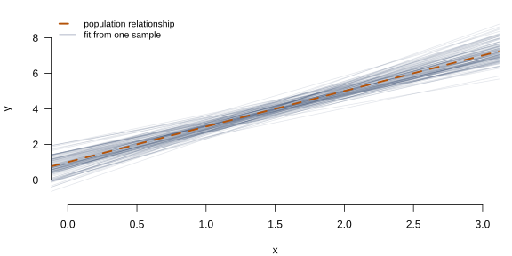
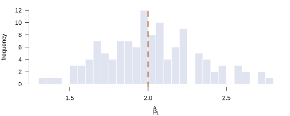

Econometrics, the DGP, and the Map of the Course
Lecture 1
0.1 What this course is about
A definition worth arguing with
Econometrics is often introduced as the meeting point of economic theory, mathematics and statistics. That is true, and not very useful: it lists the ingredients without saying what is being cooked.
Econometrics is the study of how we learn about unknown parameters from data generated by a probabilistic process.
Every word in that sentence does work. Unknown parameters: there is something in the world we would like to know and cannot observe. Data: we observe a finite sample, not the world. Generated by a probabilistic process: the sample is one realisation among many that could have occurred, and any claim we make must account for that.
The consequence is that econometrics is not a catalogue of techniques. It is a small number of questions, asked repeatedly, in increasingly demanding settings.
0.2 Three questions and a fourth
The claim we cannot yet evaluate
An economist reports that an additional year of schooling raises earnings by 8%.
Three things must be settled before that number means anything — and they are genuinely separate, which is why confusing them is the most common failure in applied work.
The three questions
The Four Questions—What organises the whole course
- Identification. Under what conditions do the data and the model permit us to learn about the parameter at all? A question about the population.
- Estimation. Given identification, how do we construct an estimate from a finite sample?
- Inference. How precisely have we learned? An estimate without uncertainty is not a result.
And a fourth, underneath
Under the Hood—Computation
How are the estimator and the inference procedure actually carried out?
Not “which command do I type”, but: what sequence of numerical operations produces the number on the screen, and when does that sequence fail?
Identification is not a small-sample problem
Important
If a parameter is not identified, collecting more data does not help. Not “helps slowly” — does not help.
The estimator may converge, beautifully and with tight standard errors, to the wrong thing.
This is why identification comes first in the map below, and why it is a question about the population rather than about the sample. It is settled before any data are collected.
0.3 The map
The architecture of the semester
The diagram below is the skeleton of the entire course. Every method we study occupies a position in it, and each lecture will begin by locating itself here.
Select a stage to see the question it asks and where the course answers it.
Two features worth stating
These are what distinguish the diagram from a table of contents.
Estimation branches. There are two ways to build an estimator, and nearly everything in the course is one or the other. We meet both in the linear model, in Lecture 3, long before either has a name.
Asymptotic theory sits between estimation and inference, not off to the side. It is not a mathematical preliminary to be endured. It is the machinery that converts “here is an estimator” into “here is what we can say about the parameter”.
0.4 The Data Generating Process
What a DGP is
What is the DGP?
A data generating process is a complete probabilistic description of how the observed sample was produced: the distribution of the observable variables, and the relationship between observations.
Write \(W_i\) for the observables of unit \(i\) — in regression, \(W_i = (y_i, \mathbf{x}_i)\) — and assume \(\{W_i\}_{i=1}^n\) is drawn from a population distribution \(F\).
A useful fiction
We never observe the DGP. It is an assumption we impose about how the data came about — one we choose, and could have chosen differently. That makes it sound optional, and it is not: the DGP is the only thing that gives the central vocabulary of this course any meaning at all.
Bias, consistency, standard error, confidence interval — every one of these is a statement about what would happen across repeated samples from the DGP. Remove the DGP and not one of those words can be defined, let alone computed.
Three objects that get confused
Definition 1 (Estimand, estimator, estimate) The estimand \(\theta\) is the unknown feature of the population — a fixed, non-random functional of \(F\).
An estimator \(\hat\theta_n = \hat\theta(W_1,\dots,W_n)\) is a rule mapping samples to numbers. Because the sample is random, the estimator is a random variable.
An estimate is the number the estimator returns on the sample you have. It is not random.
Why the distinction is not pedantry
- “\(\hat\beta\) is unbiased” — a statement about the estimator: \(\E[\hat\beta] = \beta\) over repeated samples.
- “\(\hat\beta = 0.081\)” — an estimate. It is neither biased nor unbiased. It is 0.081.
- “\(\beta\) is the return to schooling” — identifies the estimand, and says nothing about either of the above.
Students routinely blur these three. The distinction is the entire basis of inference: every property we prove this semester is a property of the estimator, established by reasoning about the distribution it inherits from the DGP.
The sampling distribution is invisible
The single most important idea in the course is that the estimator has a distribution. We see one sample and compute one number, but that number is a draw from a distribution generated by the DGP — and it is that distribution, not the number, which every claim about bias, precision and significance refers to.
Since we only ever observe one draw, the distribution is invisible. Simulation is the one device that can show it to us: fix a DGP, draw from it repeatedly, and watch what the estimator does.
One DGP, many samples
Every grey line is a legitimate result that a careful researcher could have obtained. The estimand \(\beta_1 = 2\) is fixed; the estimates scatter around it. The spread of the bundle is the sampling distribution.
The same information, one dimension at a time
Collapsing the bundle of lines to the slope alone gives the object we will spend Lectures 4 to 6 characterising: the sampling distribution of a single coefficient.

Three questions follow immediately
- Do the estimates centre on the truth? — unbiasedness, Lecture 4
- Do they concentrate as \(n\) grows? — consistency, Lecture 5
- Can we say, from one sample, how wide the bundle is? — inference, Lecture 6
The third is the remarkable one. A single sample carries enough information to estimate the spread of a distribution we can never observe.
0.5 Where the models come in
A sequence of failures and repairs
| Setting | The problem it responds to | Lectures |
|---|---|---|
| Linear regression | A baseline: what can be learned under exogeneity? | 2–6 |
| Heteroskedasticity, clustering | The variance assumption fails; inference breaks | 7, 16 |
| Bootstrap | The asymptotic approximation may be poor | 8 |
| Functional form, data problems | The straight line is the wrong shape | 9 |
| Instrumental variables | Exogeneity fails; identification is at risk | 10–11 |
| GMM | A general language for the second way of building estimators | 12 |
| Maximum likelihood | The parameter is not a conditional mean | 13 |
| Logit and probit | The outcome is binary | 14 |
| Panel data | Unobserved heterogeneity, and what variation survives it | 15–16 |
Read down the middle column. It is not a list of techniques; it is a sequence of failures and the repairs they provoked.
0.6 The two families
Two ways to build an estimator
Almost every estimator in this course is built in one of two ways, and it is worth seeing the shapes now — you will meet both in Lecture 3, before either has a name.
Researcher's Toolbox—Optimisation, or a condition on averages
By optimisation. Write down a criterion that measures how badly a candidate value fits the data, then pick the value that does best. Least squares picks the coefficients that make the sum of squared errors as small as possible.
By a condition on averages. Write down a quantity that the model says should average to zero in the population, then pick the value that makes it average to zero in your sample.
0.7 Econometrics as practice
Card & Krueger (1994)
In the Literature—The contribution is an identification argument
New Jersey raised its minimum wage in 1992; Pennsylvania did not. Comparing employment changes in fast-food restaurants across the border, Card and Krueger (1994) found no evidence of employment losses.
The paper is famous for its conclusion. It belongs in the first lecture for a different reason: the estimation is arithmetic. What made it publishable was the case that the comparison isolates the effect of the policy.
This is the shape of a great deal of modern empirical economics. The hard part is rarely the estimator.
Angrist & Krueger (1991)
In the Literature—Finding variation you can trust
Quarter of birth affects how much schooling a person completes, through compulsory attendance laws — but there is no reason it should affect earnings in any other way (Angrist and Krueger 1991). That second claim is what makes the first one useful.
Lectures 10 and 11 are about turning arguments of this shape into estimators, and about how fragile they can be.
Theoretical and applied econometrics
Theoretical econometrics develops estimators and establishes their properties. Applied econometrics uses them to answer economic questions.
This course is aimed at the applied economist — and it is a theoretical course, because the applied economist who does not know why an estimator works cannot tell when it stops working.
0.8 Computation and replication
Three facts that will matter
Under the Hood—Why we open the hood
- No software computes \((\bX'\bX)^{-1}\bX'\bY\) by inverting \(\bX'\bX\). Forming the cross-product squares the condition number of \(\bX\). R uses a QR decomposition. (Lecture 3)
- Maximum likelihood has no closed form for logit or probit. The estimate is the output of an iterative optimiser that can fail to converge. (Lecture 14)
-
vcovHC()has at least four variants that differ in finite samples, and packages disagree about the default. (Lecture 7)
None of these is a programming detail. Each is a place where the mathematics and the number on the screen can part company.
Two practices, expected in this course
Set a seed. Any result involving simulation must be reproducible. A Monte Carlo without a seed is not a result.
Keep the code with the paper. Replication is not a courtesy to referees; it is how you discover your own errors.
0.9 What you should be able to do
The goal
Not that you can say “I know OLS, IV, logit and panel data.”
That, faced with an empirical question, you can think:
I have a DGP and a parameter of interest. I need to establish whether that parameter is identified, choose an estimation strategy suited to it, work out the properties of the resulting estimator, and construct inference valid under the assumptions I am actually willing to make.
Reading
| Hansen | Chapter 1 |
| Greene | Chapter 1 |
Hansen’s first chapter is short and worth reading in full, particularly its remarks on econometric software and replication. Greene’s covers the same ground with more attention to the history of the field.
0.10 References
References
Angrist, Joshua D., and Alan B. Krueger. 1991. “Does Compulsory School Attendance Affect Schooling and Earnings?” Quarterly Journal of Economics 106 (4): 979–1014.
Card, David, and Alan B. Krueger. 1994. “Minimum Wages and Employment: A Case Study of the Fast-Food Industry in New Jersey and Pennsylvania.” American Economic Review 84 (4): 772–93.